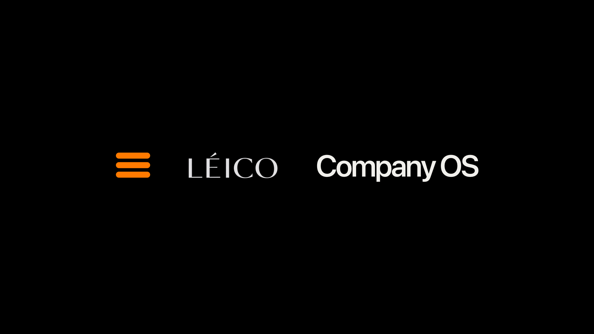

Company OS / Follow the Light
A silent film about work that keeps moving.
Seedance 2.5 参考图模式制作包。真实摄影作为首帧，人物很小、风景很大；整片没有旁白、对白和 BGM，只有连续自然环境声与克制的动作音效。
Seedance 2.5 · 1080p16:9 output / 2.39:1 safe composition47 secondsNo VO · No Dialogue · No BGM
Human roleIdeas · direction · judgment
Agent roleBuild · test · coordinate
Visual ruleReal landscapes, restrained motion
Sound ruleOne continuous world, no music
Locked on-screen copy
全部为后期叠字，不让视频模型生成文字。英文为主，中文仅供确认。
01Ideas need room.想法需要空间。
02Set the direction.由人决定方向。
03Agents carry the complexity.复杂执行，交给 Agent。
04Context moves without meetings.上下文自动流动，不再靠会议搬运。
05You step in where judgment matters.只有需要判断时，你才介入。
06The work keeps moving.工作始终向前。
07Build from anywhere.在任何地方，创造软件。
Reference frames + video prompts
每镜一个动作、一个主运镜、一个明确终点。

08 · End card
纯黑底，三个品牌元素单行排列；从傍晚海景自然收暗，不产生白色闪屏。
Sound
让上一镜海浪尾音自然延续 1.2 秒后消失；0:01.4 加一个极轻、干净、非科幻的系统完成音。无音乐。